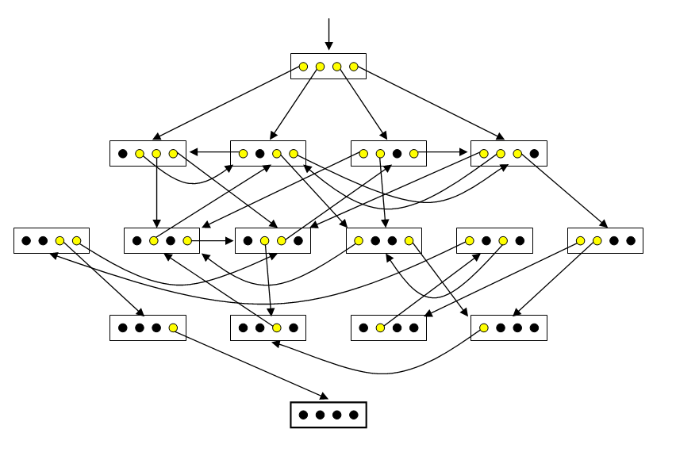

|
Oskar van Deventer's 4-Bit Maze |
Dr. M. Oskar van Deventer is one of the world's most brilliant puzzle creators. His original four-bit maze, according to clickmazes.com, "is electro-mechanical and is driven by a micro-controller. The aim is to press down all the switches. The micro-controller can both pull down and push up switches using springs and four electromagnets." For an image and an applet featuring a variety of rule classifications, see Oskar's Four-Bit Mazes at clickmazes.
Here we will consider only one rule classification from their applet named "Four-bit maze".
Our applet features four buttons, each depicting an on/off state with a light bulb image. Initially all lights are on. The goal is to turn all lights off. With the "Four-bit maze", clicking a button that is "off" has no effect. Clicking a button that is "on" has the effect of turning that button off, but may cause other buttons to turn on/off. In addition to clicking the buttons, you may also click the background next to the buttons to focus key presses to the applet. Then, you may press keys "1", "2", "3", and "4" to more easily press the buttons. "Reset" will reset you to the initial state where all lights are on. "New Maze" will generate a new maze and reset to the initial state.
Although there are only 16 possible states, you may be surprised at how difficult it is to turn off all lights. Observe your tendency to fall into cycles, breaking such cycles only after careful observation. Before reading further, consider how you might solve such mazes.
Such mazes are challenging in part because we find it cognitively difficult to build a "map" of our maze traversal, as compared to a standard pencil and paper maze. Such states are abstract and provide little sense of progress towards the goal. For Oskar's "Four-bit maze" of the clickmazes applet, we might visualize the maze as follows:

A state is represented by a rectangle containing yellow/black circles denoting on/off lights. The initial state is represented with an arrow leading in from nowhere. The goal state is represented with a thick rectangle. Each arrow represents a possible state transition (i.e. change). The arrow leads from the particular light turned off in a source state to the resulting target state. Visualizing a four-bit maze thus, one can much more easily and visually trace a solution path (and thus a solution sequence of actions) backward from the goal to the current state.
Suppose that one cannot visualize the maze (e.g. lacking pencil, paper, or an unusually gifted mind). How might one then approach this challenge?
Some might find it easier to remember sequences of numbers rather than light patterns. Possibly giving such states names (in the form of numbers) might aid in remembering light pattern sequences. Happily, there is an easy correspondence between these states and the numbers 0 through 15. Simply consider the off/on lights to be 0/1 binary digits and mentally associate each state's binary number with its corresponding integer. For the maze visualized above, the initial state would be 15, and the following state sequence would lead to the goal: 15, 14, 12, 4, 10, 3, 1, 0.
Thinking of these as binary digits, it is then natural to number the lights left-to-right as bit numbers 3, 2, 1, and 0, since the corresponding place values in binary are 23, 22, 21, and 20, respectively. Then a more descriptive solution state sequence with parenthesized chosen bits would be as follows 15 (0) 14 (1) 12 (3) 4 (2) 10 (3) 3 (1) 1 (0) 0.
The "Four-bit maze" rule at clickmazes reads, "More than one light may come back on in this maze so it's harder to tell how well you're doing." This is consistent with our specification. However, in Oskar's example maze visualized above, there are two further transition constraints: (1) One light (the one chosen) goes out. (2) At most two other lights come on. We do not constrain the number of lights which may change on/off in a transition. Only the light selected must turn off. Like the example, we further constrain that no two transitions from a source state can lead to the same target state.
With the binary representation in mind, we can now formally specify our four-bit mazes. A four bit maze has states S = {s0, ..., s15} with initial state s15 and goal state s0. A maze state sn is represented by four off/on lights depicting the corresponding binary bits of n from greatest (23) to least (20) significance. A four bit maze has actions A = {a0, ..., a3}, where action an denotes the selection of bit n. Our four-bit maze transition function t : S × A → S has the following constraints:
Let us call the constraints of the last bullet the "reachability" constraints.
Our four-bit maze applet generates its own four-bit mazes with a simple, independently devised algorithm:
Surprisingly, this simple method generally seems to produce good four-bit mazes where roughly half the states are tightly interconnected, while a "solution arm" of the other half of states has a unique sequence leading to the goal, with false steps undoing progress.
The recreational mathematician will find many different interesting questions regarding the space of all possible four-bit mazes, as well as interesting bias effects from different maze generation algorithms. One particular line of research might involve building cognitive models for such maze solving, and using such models to define metrics to measure qualities of four-bit mazes (e.g. perceived difficulty). There are no doubt interesting relations to research in reinforcement learning. The reader is encouraged to introspect on their solution process. One might argue that the most enjoyment lies in the process of learning how to solve such mazes. Enjoy!
Last updated 22 July 2008
Todd Neller